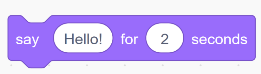
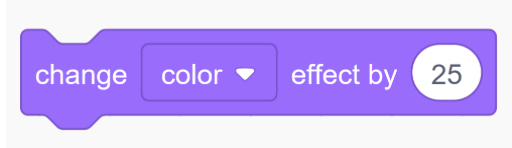
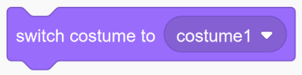
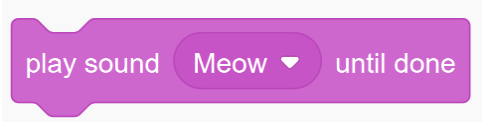
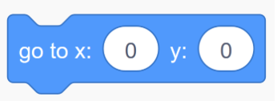
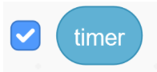

Maze Game
Here are some challenges for students to make their maze games even more fun!
Workshop 1
Challenge 1
Say something!
Make your character say something when you press the space key.
Hint: Use the Say block from Looks
Challenge 2
Celebrate!
When you finish your maze make your character change color!
Hint: Use the Change Color Effect block from Looks
Challenge 3
Spin!
When you finish your maze make your character spin!
Hint: Use the Rotate block from Motion

Challenge 4
Transform!
When you finish your maze make your character change into something else!
Hint: Use the Switch Costume block from Looks
Workshop 2
Challenge 1
Cheat code!
Make your character run through your maze autonomously (automatically) when you press a secret key.
Hint: Use the Move and Point in Direction blocks from motion
(You will probably have to experiment with how far your character has to move before changing direction)
Challenge 2
Introducing...
Add a starting block to your maze and make your character tell a story or introduce your game when it touches that block.
Hint: Think about what makes that block special...
Challenge 3
Sounds!
Instead of speech bubbles add in sounds!
Hint: Switch out a Say block for a Play Sound Until Done block from Sound
Workshop 3
Challenge 1
Enemies!
Add more enemies to make the game harder!
Hint: Don’t forget to move your enemies before getting the glide blocks.
Challenge 2
Secret passage!
Add a circle to your maze which teleports you ahead in the game. Maybe even make it teleport you past an enemy.
Hint: Use the Go To X,Y block from Motion
Challenge 3
Timer!
Add a timer to your maze. Make your character announce the time you took to beat the maze when you win.
Hint: Check the check box next to Timer in Sensing
Drag the Timer block into a Say block…

After the workshops
Already made the maze game? Looking for a challenge to make it even better? Try one of these!
Challenge 1
Make the enemy say things!
You already made the player say things. What if the enemy could say things too? Try to figure out how to make the enemy say things just like the player does.
Hint: switch to the Enemy Sprite under the stage, and use a "When the Flag is Clicked" block and a "Say" block.
Test your game. If it works, congratulations, you have completed this challenge! If not, don't give up: keep trying and check the code for any mistakes. Maybe you put a block in the wrong place, forgot a block, or programmed the wrong sprite. If you still can't figure it out, take a peek at the solution and then try it out for yourself.
Show Solution
Here is how to make the enemy say "got you" when you touch it. The fun part is you can make it say whatever you want!
1. Go to the Enemy Sprite under the stage. Add a When the Flag is Clicked block.
2. Add a forever block under the When the Flag is Clicked block. Inside the forever, add an if...then statement. Make sure the if...then is inside the forever, not outside!
3. Go to the sensing section. Find where it says touching mouse-pointer?. Drag this block into the if...then statement. Click on the triangle next to where it says "mouse-pointer" and choose your game's player. Make sure this block goes into the diamond-shaped part of the if...then!
4. Inside the if...then, add a Say Hello! for 2 secs block. Change the "Hello!" to "Got you!" or whatever you want.
5. Your code should look similar to this:

Challenge 2
Make the enemy chase the player when close!
You have already made the enemy move around the stage. How cool would it be if the enemy knew where the player was and followed it? Try to make the enemy follow the player.
Hint: switch to the Enemy Sprite under the stage, and use a "When the Flag is Clicked" block, a "point towards" block from the motion section, a "less than" block from the operators section, and a "distance to" block from the sensing section.
Test your game. If it works, congratulations, you have completed this challenge! If not, don't give up: keep trying and check the code for any mistakes. Maybe you put a block in the wrong place, forgot a block, or programmed the wrong sprite. If you still can't figure it out, take a peek at the solution and then try it out for yourself.
Show Solution
Here is how to make the enemy move towards the player when close.
1. Go to the Enemy Sprite under the stage. Add a When the Flag is Clicked block.
2. Add an forever block under the When the Flag is Clicked block. Inside the forever, add an if block.
3. Inside the diamond of the if block, add a less than block.
4. In the left box of the less than block, add a distance to block. Click the small triangle and select your game's player.
5. In the right box of the less than block, add a number for how close the player has to be before the enemy chases it.
4. Inside the if block, add a point towards block. Click on the triangle next to where it says "mouse-pointer" and choose your game's player.
5. Under the point towards block, add a move 10 steps block. You can find this in the motion section. Change this number to make the enemy faster or slower. Make sure this block is inside the if, not outside!
6. Your code should look similar to this:

7. If the enemy flips upside down, click on the Enemy Sprite under the stage and click on the letter i in the corner. Where it says "rotation style", click on the left-right option:


Challenge 3
Make the player change colors!
Right now, the player always looks the same. What if your player changed color when you moved?
Hint: switch to the Player Sprite under the stage, and use a "change color effect" block from the looks section under your "when up arrow key pressed" block and the other keyboard blocks.
Test your game. If it works, congratulations, you have completed this challenge! If not, don't give up: keep trying and check the code for any mistakes. Maybe you put a block in the wrong place, forgot a block, or programmed the wrong sprite. If you still can't figure it out, take a peek at the solution and then try it out for yourself.
Show Solution
Here is how to make the player change colors when it moves.
1. Go to the Player Sprite under the stage. Find the when up arrow key presed block.
2. Add a change color effect by 25 block somewhere under the when up arrow key pressed block.
3. Your code should look similar to this for the up arrow:

4. Repeat these steps for the other three arrows (left arrow, right arrow, down arrow).
5. To understand how this works, try the Understanding your Code section below.
Extra Challenge
Now that you have completed this challenge, can you figure out how to make the enemy change color too?
Understanding your Code
In challenge 3, you may notice that the order you put the blocks in doesn't matter as much as in challenges 1 and 2 or some of the other code you have done. Why do you think this is?